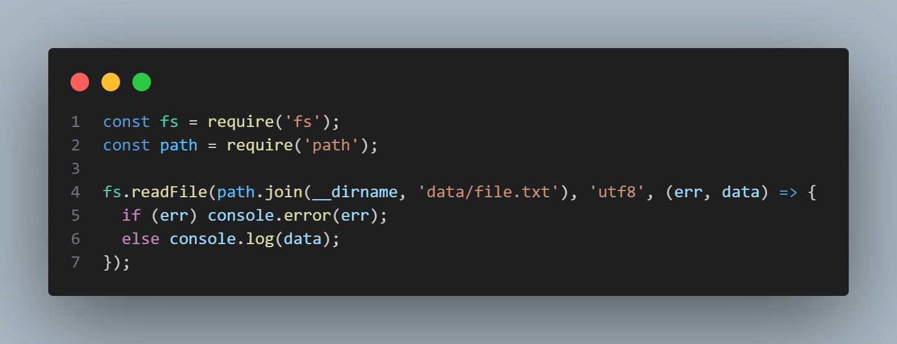
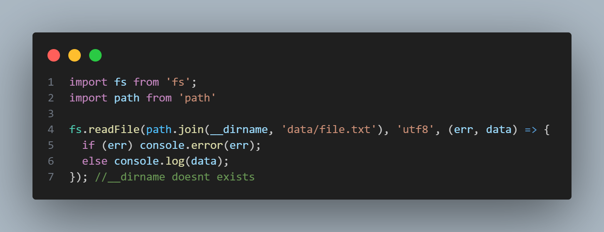
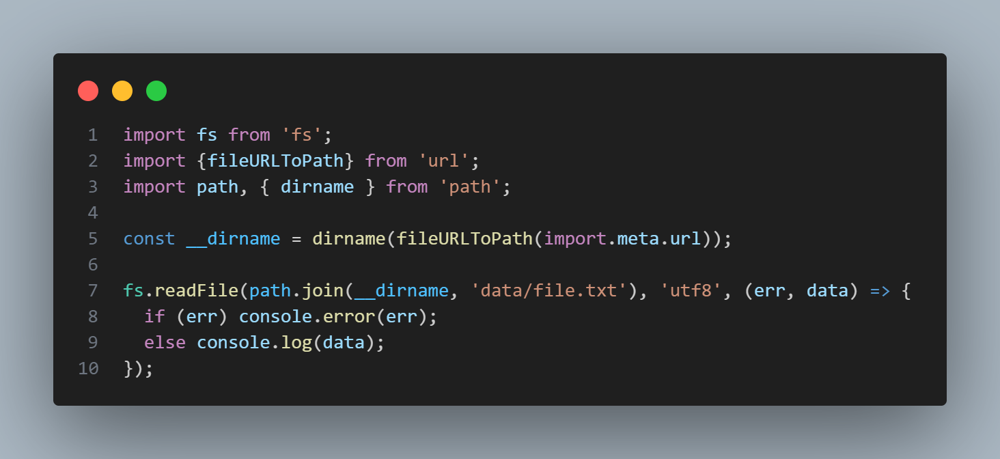

__dirnames is needed to work with the absolute paths. It makes sure your file is read relative to the file directory rather than current working directory set in your terminal. In CommonJS, __dirname is a special variable that gives the directory name of the current module. However, in ES modules, __dirname does not exist.
If your app's directory structure changes or you're running the script from different locations, using __dirname ensures the correct path is always used.
The same code fails with ES module because __dirname is not a special variable there.
Follow these steps:
The final code looks likes:
__dirname is a special varaible in commonJS. Since this variable doesn't exist in ES module, we have explicitly write bunch of code to make it possible.